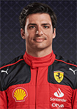
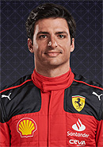

Formula 1
Piloto favorito
Nació el 16 de octubre de 1997 en Montecarlo, situado en el principado de Mónaco. Desde muy pequeño y a raíz de sus origines, Charles Leclerc se metió en el mundo del automovilismo con ocho años (2005). Sus primeros éxitos en el karting llegaron en 2005, 2006 y 2008 al ganar el Campeonato PACA de Francia, pero su gran golpe llegó en 2011 al ganar el Campeonato Mundial de Karting. Tras varios años más de karting en los que ganó la WSK Euro Series entre otras cosas, el piloto monegasco dio el salto a los monoplazas en 2014 y consiguió acabar segundo en la Fórmula Renault 2.0 en su año de debut. En 2015, Charles Leclerc dio el salto a la Fórmula 3 y llamó la atención de Ferrari, consiguiendo unirse a su academia de jóvenes pilotos en 2016 y convirtiéndose en piloto de desarrollo de Haas y de la propia Scuderia Ferrari.
El camino de Leclerc hasta llegar a la cima no ha sido fácil. Su trayectoria está marcada por las tragedias y los éxitos, por las dificultades y las oportunidades, por la pasión y la perseverancia. Desde su infancia en el karting, pasando por las categorías inferiores, hasta su ascenso a la Fórmula 1 con Ferrari, Leclerc ha demostrado un talento innato y una madurez excepcional..
Actualmente, Leclerc tiene contrato con Ferrari hasta 2026, y es la gran esperanza de la afición italiana para volver a ver a un piloto de la casa vestida de rojo levantar el trofeo de campeón del mundo. Leclerc tiene el talento, la determinación y el carisma para lograrlo, y solo necesita un coche a la altura de sus capacidades. Leclerc es el joven prodigio que desafía a los grandes de la Fórmula 1, y que aspira a convertirse en una leyenda del deporte.
Pilotos
La Fórmula 1 está considerada universalmente como la categoría reina del automovilismo. Por ello, ocupar uno de los 20 asientos que componen su parrilla ya supone todo un logro en la carrera de cualquier piloto. Sin embargo, como todo deportista profesional, la ambición nunca es estar sino ganar. Una gloria reservada para unos pocos elegidos, que además de una pericia superior al volante también deben contar con un coche veloz y fiable a lo largo del campeonato. Oficialmente, el primer Mundial de F1 se inició en 1950. Desde entonces, 34 pilotos diferentes han logrado proclamarse campeones del Mundo de Fórmula 1. Un club selecto, en el que sin embargo se encuentran varios múltiples ganadores.
Conforme avanzaron los tiempos, los Fórmula 1 se fueron perfeccionando y los pilotos se tuvieron que adaptar a las nuevas exigencias físicas y mecánicas. La suerte que ha tenido este deporte es que, en cada generación, han brillado dos, tres o cuatro pilotos como mínimo. Algunos con mejores prestaciones que otros, por lo que sus números han sido inflados hasta el punto de convertirse en unos nombres legendarios.
Pilotos más destacados


 
